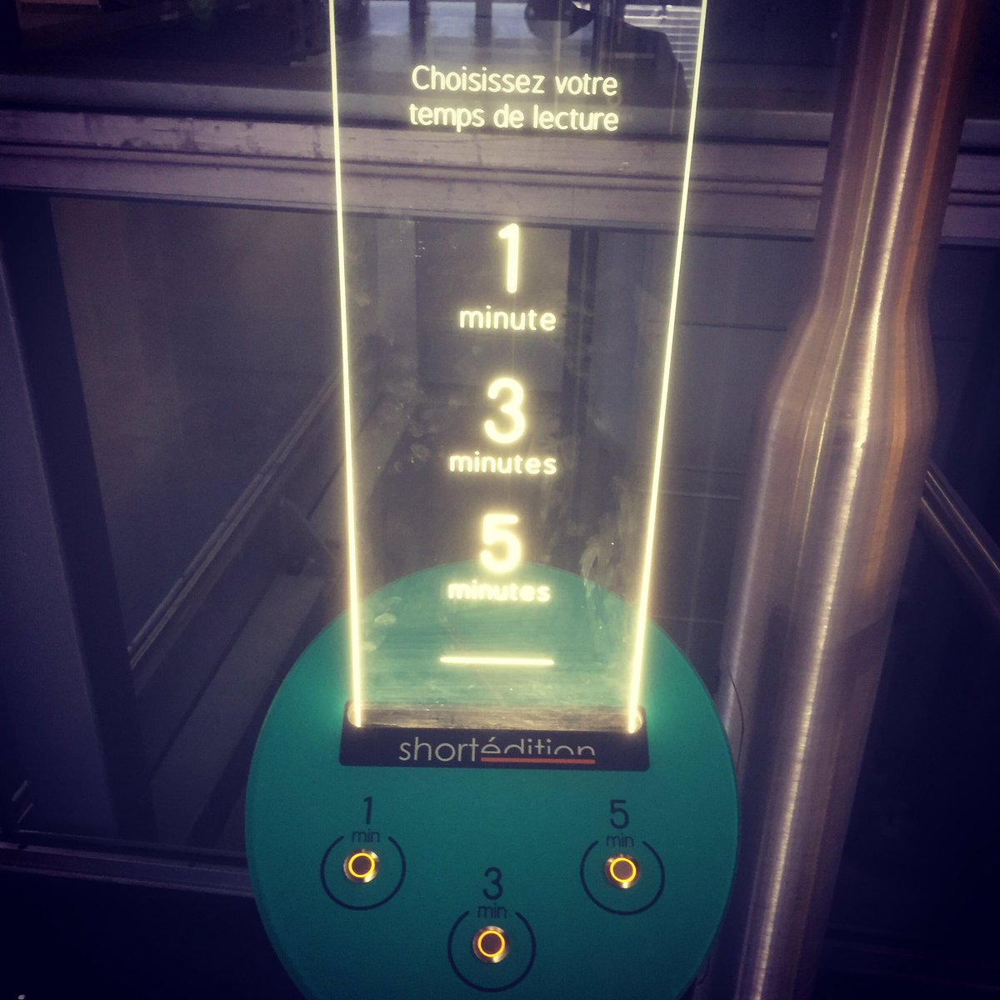

自己紹介サイトが事故

ここ東の京よりはるか西方に位置する三重、そこが私の故郷である
古くよりお伊勢参りで栄えたという伊勢は、残念なことに私とは同県であるという以外縁も所縁も無い
ならばお前はどこからきたのか
この国に住んでいれば忍者という単語を耳にしたことが一度ならずあるだろう私だって知っていた
そう、何を隠そう私の故郷は江戸末期の倒幕までは忍者で有名な里であったのだ
しかし今はどうだろう。忍者の残した忍術などどこにもなく、忍者衣装を押し着せられたマネキンが街に飾られている程度だ
何故我が故郷はここまですたれてしまったのか。
そして何故私はこのような駄文をここに記載しているのだろうか。
責任を問わねばならない。責任者は誰か。